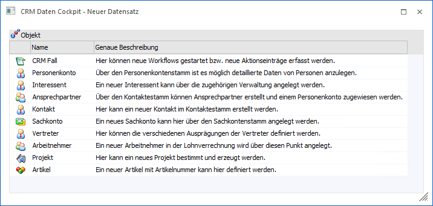
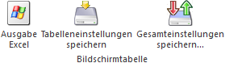

Über den Button "Neuen Datensatz anlegen" im CRM Daten Cockpit wird das Programm "CRM Daten Cockpit - Neuer Datensatz" geöffnet, über welches Stammdaten bzw. CRM-Fälle angelegt werden können.

Folgende Einträge stehen zur Auswahl
ü CRM-Fall
ü Personenkonto
ü Interessent
ü Ansprechpartner
ü Kontakt
ü Sachkonto
ü Vertreter
ü Arbeitnehmer
ü Projekt
ü Artikel
Nach dem Markieren eines Eintrags kann per Doppelklick, dem Button "Ok" oder der Taste F5 in das entsprechende Stammdatenfenster gewechselt werden bzw. in die CRM-Fallanlage.
Tabellenbuttons

Ø Ausgabe Excel
Durch Anwahl des Buttons "Ausgabe Excel" wird der Inhalt der Tabelle an Microsoft Excel übergeben.
Ø Tabelleneinstellungen speichern
Die Spalten einer Tabelle können grundsätzlich an beliebige Positionen verschoben, bzw. in der Breite entsprechend angepasst werden. Durch Anwahl des Buttons "Tabelleneinstellungen speichern" werden die Einstellungen benutzerspezifisch gespeichert und bei dem nächsten Aufruf des Programmpunktes wieder vorgeschlagen.
Ø Gesamteinstellungen speichern
Im Gegensatz zu "Tabelleneinstellungen speichern" können mit "Gesamteinstellungen speichern" mehrere Tabellenaufbauten gespeichert und nach Wunsch geladen werden. Zusätzlich werden Sonderfunktionen der Tabelle (z.B. "Spalte gruppieren") ebenfalls bei der Speicherung bedacht.
Buttons
Ø Ok
Durch Anklicken des Buttons "OK" bzw. der Taste F5 wird in das entsprechende Stammdatenfenster bzw. die CRM-Fallanlage gewechselt.
Ø Ende
Durch Drücken des Buttons "Ende" bzw. der Taste ESC wird der Programmbereich geschlossen.